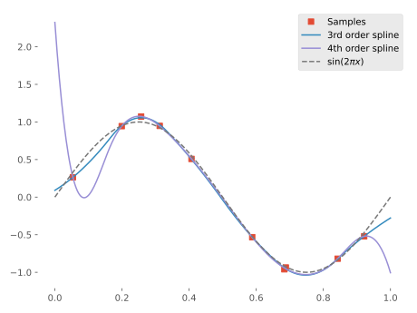

Function approximation
To approximate a mathematical function on a B-spline basis, we can simply solve for the coefficients:
julia> t = LinearKnotSet(7, 0, 7, 10);
julia> B = BSpline(t)
BSpline{Float64} basis with LinearKnotSet(Float64) of order k = 7 on 0.0..7.0 (10 intervals)
julia> c = B \ sin
16-element Array{Float64,1}:
3.674947319163227e-7
0.1166649763895669
0.3500043164970867
0.6828451145424481
1.0237038168861594
1.1358262863822566
0.7361804983706153
-0.009705277902046651
-0.7510239693627963
-1.139127153806961
-0.991477377385712
-0.4798514317407342
0.024153163433647172
0.3716550472969573
0.5690327347258564
0.6569863188695337The top panel shows the expansion coefficents and the reconstructed function, the middle panel the reconstruction error, and the bottom panel the underlying basis functions.
Since the sine function is non-zero at $x=7$, it is important that our basis set includes a B-spline that supports this, hence the full multiplicity of last knot. The sine function is zero at the first knot, however, something that is reflected in the fact that the first expansion coefficient is almost zero. In problems where vanishing boundary conditions are stipulated, this can be enforced by dropping the first/last spline:
julia> t = LinearKnotSet(7, 0.0, 1.0, 6);
julia> B = BSpline(t)
BSpline{Float64} basis with LinearKnotSet(Float64) of order k = 7 on 0.0..1.0 (6 intervals)
julia> B̃ = B[:,2:end-1]
BSpline{Float64} basis with LinearKnotSet(Float64) of order k = 7 on 0.0..1.0 (6 intervals), restricted to basis functions 2..11 ⊂ 1..12We can now compare how well the restricted basis can reconstruct different functions, compared to the unrestricted one:
julia> f1 = x -> sin(2π*x)
#121 (generic function with 1 method)
julia> f2 = x -> cos(2π*x)
#123 (generic function with 1 method)
julia> c1 = B \ f1
12-element Array{Float64,1}:
8.595306123332097e-6
0.17449541085301523
0.5236843390613484
0.9897088684171409
1.265948043821677
0.6905122508504199
-0.6905122508504197
-1.2659480438216766
-0.9897088684171416
-0.5236843390613481
-0.1744954108530153
-8.59530612374404e-6
julia> c2 = B \ f2
12-element Array{Float64,1}:
0.9999984763007934
1.000010902252537
0.9268416666707764
0.5980612634315096
-0.1993704588377225
-1.1959917207779527
-1.195991720777952
-0.1993704588377244
0.5980612634315112
0.9268416666707747
1.000010902252537
0.9999984763007937
julia> c̃1 = B̃ \ f1
10-element Array{Float64,1}:
0.17450648562854001
0.5236722006849034
0.9897209715549453
1.2659362792307434
0.6905240028400118
-0.690524002840012
-1.265936279230742
-0.989720971554948
-0.5236722006849018
-0.1745064856285418
julia> c̃2 = B̃ \ f2
10-element Array{Float64,1}:
2.1869627421644986
-0.18872692489766923
1.4520927974960849
-0.6709944899983972
-1.057228429296141
-1.057228429296146
-0.6709944899983946
1.4520927974960847
-0.1887269248976696
2.1869627421644977As is to be expected, the sine function is perfectly reconstructed in both cases, whilst the cosine fails spectactularly in the restricted case.
Smooth interpolation of measurement data
If instead of a mathematical function, we have a dataset that we wish to interpolate smoothly, we accomplish that quite simply by evaluating the B-splines on the values of $x$ where we know the data. We must beware of overfitting though, which is illustrated below. First, we generate some “measurement” data:
julia> f = x -> sin(2π*x)
#9 (generic function with 1 method)
julia> rng = MersenneTwister(123);
julia> N = 10
10
julia> x = clamp.(sort(range(0, stop=1, length=N) + 0.1(2rand(rng,N) .- 1)), 0, 1);
julia> y = f.(x) + 0.1(2rand(rng,N) .- 1);We then construct two B-splines sets of different orders, but on the same domain:
julia> t3 = LinearKnotSet(3, 0.0, 1.0, 6);
julia> t4 = LinearKnotSet(4, 0.0, 1.0, 6);
julia> B3 = BSpline(t3,k′=1)
BSpline{Float64} basis with LinearKnotSet(Float64) of order k = 3 (parabolic) on 0.0..1.0 (6 intervals)
julia> B4 = BSpline(t4,k′=1)
BSpline{Float64} basis with LinearKnotSet(Float64) of order k = 4 (cubic) on 0.0..1.0 (6 intervals)
julia> c3 = B3[x,:] \ y
8-element Array{Float64,1}:
0.09059408654085727
0.3193964537812517
1.2724504917348318
0.48266890171285365
-0.5585179917405891
-1.2049827692771158
-0.5094743222571649
-0.27749270716604346
julia> c4 = B4[x,:] \ y
9-element Array{Float64,1}:
2.32388044050468
-1.1504112365148684
1.4118937176980075
0.9380508194440034
0.005584178064480077
-1.060186123070226
-1.1044261039469099
-0.1538696429680995
-1.00556852643735